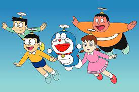
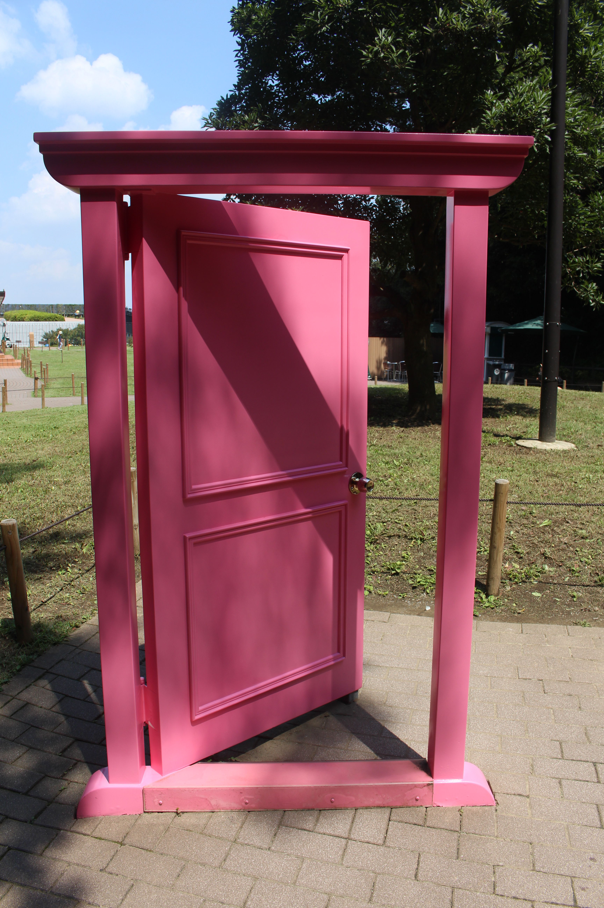

Doraemon (ドラえもん) is a Japanese manga series written and illustrated by Fujiko F. Fujio. The manga was first serialized in December 1969, with its 1,345 individual chapters compiled into 45 tankōbon volumes and published by Shogakukan from 1970 to 1996. The story revolves around an earless robotic cat named Doraemon, who travels back in time from the 22nd century to aid a boy named Nobita Nobi. The manga spawned a media franchise. Three anime TV series have been adapted in 1973, 1979, and 2005. Additionally, Shin-Ei Animation has produced over forty animated films, including two 3D computer animated films, all of which are distributed by Toho. Various types of merchandise and media have been developed, including soundtrack albums, video games, and musicals. The manga series was licensed for an English language release in North America, via Amazon Kindle, by a collaboration of Fujiko F. Fujio Pro with Voyager Japan and AltJapan Co., Ltd. The anime series was licensed by Disney for an English-language release in North America in 2014, and LUK International in Europe, the Middle East and Africa. Doraemon was well-received by critics and became a hit in many Asian countries. It won numerous awards, including the Japan Cartoonists Association Award in 1973 and 1994, the Shogakukan Manga Award for children's manga in 1982, and the Tezuka Osamu Cultural Prize in 1997. By 2019, it has sold over 250 million copies worldwide, becoming one of the best-selling manga series in history. The Doraemon character has been viewed as a Japanese cultural icon, and was appointed as the first "anime ambassador" in 2008 by the country's Foreign Ministry.
Synopsis
Nobita Nobi is a ten-year-old Japanese school boy, who is kind-hearted and honest, but also lazy, unlucky, weak, gets bad grades and is bad at sports. One day, a robot cat from the 22nd century named Doraemon is sent back to the past by Nobita's future grandchild, Sewashi Nobi, to take care of Nobita so that his descendants can have a better life. Doraemon has a four-dimensional pouch in which he stores tools, inventions, and gadgets from the future to aid Nobita whenever he is faced with a problem. Although Doraemon is a cat robot, he has a fear of mice because of an incident where robotic mice chewed off his ears. This is why Doraemon lost his original yellow color and turned blue, from sadness. Nobita has three main friends: Takeshi Goda (nicknamed Gian), Suneo Honekawa (Gian's sidekick), and Shizuka Minamoto, Nobita's best friend and love-interest. Gian is a strong, leading and domineering boy, but also loyal to his friends. Suneo is a wealthy and spoiled boy who uses his friendship with Gian to win the respect of other schoolmates. Shizuka is a gentle and kind girl who frequently plays with Nobita. Nobita has a crush on Shizuka; she is his prospective future wife (Nobita's future wife is initially Gian's younger sister). Although Gian and Suneo are Nobita's friends, they also typically bully and abuse him. Nobita normally responds by using Doraemon's gadgets to fight back against them, but Nobita has a tendency to get carried away with using the gadgets (or Gian and Suneo, if they steal it away), which typically results in unintended consequences for him and others.In addition to Gian, Suneo, and Shizuka, Dorami and Hidetoshi Dekisugi (common name Dekisugi) are also recurring characters. Dorami is Doraemon's younger sister, and Dekisugi is a gifted student boy who as Shizuka's close friend, frequently attracts the jealousy of Nobita.
gadgets
Gadgets, or "himitsu dōgu" (ひみつ道具), are Doraemon's tools from the future, usually used to help the characters. Fujio said that Doraemon has a total of 1,293 gadgets;[23] according to a 2004 analysis by Yasuyuki Yokoyama of Toyama University, there are 1,963 gadgets found in 1,344 sketches.[21] The most important gadgets include "Take-Copter", a small piece of headgear made out of bamboo that can allow its users to fly; "Time Machine", a machine used for time travel; "Anywhere Door", a pink-colored door that allows people to travel according to the thoughts of the person who turns the knob; "Time Kerchief", a handkerchief which can turn an object new or old or a person young or old; "Translator Tool", a cuboid jelly that allow one to converse in any language; and "Designer", a camera used to instantly dress-up the user.[21][24] Saya S. Shiraishi wrote that most of the gadgets were "an impressive testimony to the standards of quality control and innovation that exist in the twenty-second century".[24] The gadgets were an essential part of the series so as to reflect a positive point of view about the association of technology in children, and to express the wishes of modern society.[25]